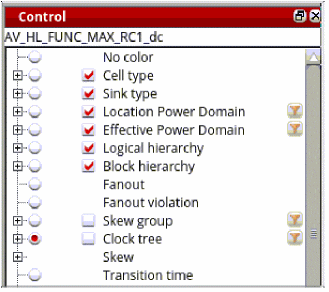
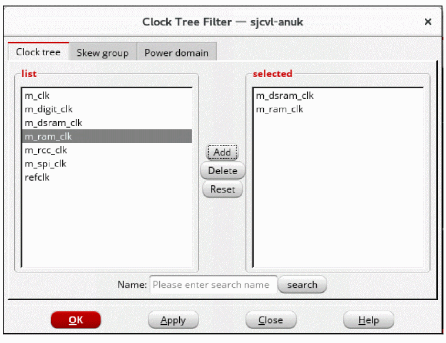
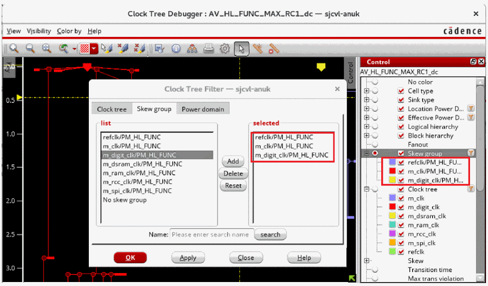

Filter Options in the Control Panel
In the Control panel, filter options are provided for power domains, skew groups, and clock trees. These are available by clicking the filter icons provided next to these items in the Control panel. These options let you view specific clock trees/power domains/skew groups in the display area while filtering out the rest. You can also search for specific clock trees/power domains/skew groups by name to filter from the display.

When any of the three filter icons is clicked, the Clock Tree Filter form opens.

The form has three tabs. Depending upon which filter icon is clicked, the corresponding tab is enabled. The rest are disabled. You can select the clock trees/power domains/skew groups to filter from the display.
When you filter the skew group by clicking the filter button on the right of the Skew group option in the Control panel, the list under the Skew option will only show the filtered skew groups instead of all the skew groups.

Return to top